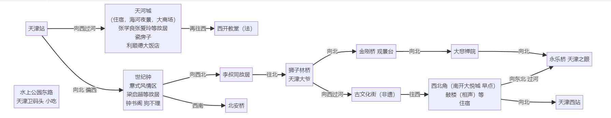

# 25 五一期间行程安排
- 4.25 晚 北京(丰台) -- 4.26 早 太原
- 4.28 晚 太原 -- 4.29 早 天津
- 4.30 早 天津(西) -- 北京(南)
# 天津一日行
# 行程重点
- 29日早 天津站下车 朝西站方向行进
- ...
- 夜景 天津之眼 天津西站附近 安排在 29日晚
- 在西站附近住一晚 旅馆|网吧
- 早点-西北角（地名 有同名地铁站） 天津西站附近？ 安排在 30日早
# 详细
29号晚住宿
# 参考一 bilibili 猫der
【超全天津旅行攻略 土著锤了三天整理，看完来天津只需要做选择题吃住行全有啦】 (opens new window)
- 天津站
- 向北 偏西
- 世纪钟 意式风情区 梁启超等故居 钟书阁 狗不理
- 再往西北 李叔同故居
- 李叔同故居往北 天津大爷
- 天津大爷向西过河 古文化街（非遗）
- 再往西 西北角（早点） 鼓楼（相声）等
- 西北角 向东北 过河 天津之眼
- 西北角向北 天津西站
- 向西 过河 偏南
- 天河城（住宿，海河夜景，大商场） 张学良张爱玲等故居 瓷房子
- 再往西 西开教堂（法）
- 向北 偏西
graph LR
StartTianJinZhan["天津站"] --> |"向西过河"| TianHeCheng["天河城<br/>（住宿，海河夜景，大商场）<br/>张学良张爱玲等故居<br/> 瓷房子 <br /> 利顺德大饭店"] --> |"再往西"| XiKaiJiaoTang["西开教堂（法）"]
StartTianJinZhan --> |"向北 偏西"| ShiJiZhong["世纪钟 <br/>意式风情区<br/> 梁启超等故居 <br/>钟书阁 狗不理"] --> |"向西北"| LiShuTong["李叔同故居"] --> |"往北"| DaYe["狮子林桥 <br /> 天津大爷"] --> |"向西过河"| GuWenHua["古文化街（非遗）"] --> |"往西"| XiBeiJiao["西北角（南开大悦城 早点）<br/> 鼓楼（相声）等 <br/>住宿"] --> |"向东北 过河"| TianJinEye["永乐桥 天津之眼"]
DaYe --> |"向北"| JinGangQiao["金刚桥 观景台"] --> |"向北"| DaBeiChanYuan["大悲禅院"] --> |"向北"| TianJinEye
ShiJiZhong --> |"西南"| BeiAnQiao["北安桥"]
XiBeiJiao --> |"向北"| TianJinXiZhan["天津西站"]
TianJinWei["水上公园东路<br /> 天津卫码头 小吃"]
ErDuoYan["耳朵眼会馆 广式早茶"]
XiaoChi["小吃"] --> BaZhen["八珍豆腐"] & XiaRenMianJin["虾仁独面筋"] & HongShaoNiuWo["红烧牛窝骨"] & ShaoSanSi["烧三丝"] & GuoTaLiJi["锅塌里脊"] & KaoYa["烤鸭"] & ShuiBaoDu["水爆肚"] & HaiHeNiuNai["海河牛奶(传统：草莓 可可)"]
HaiHeYouChuan["晚上 海河游船"]
ChenTangZhuang["陈塘庄地体站候车区 <br /> 打卡‘霍格沃兹城堡’"]
